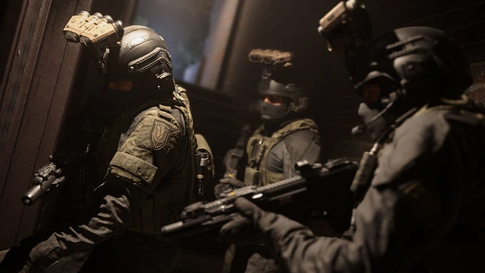
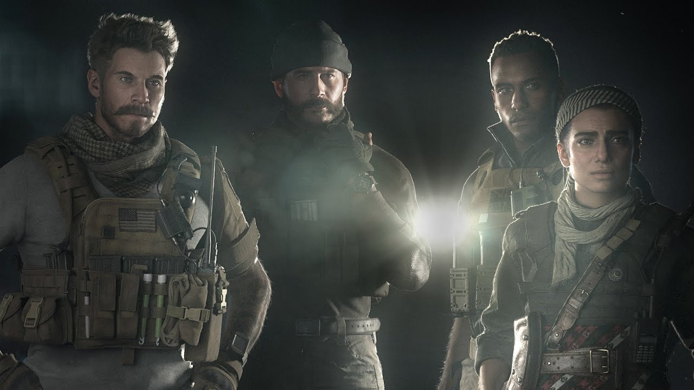

Call of Duty: Modern Warfare de 2019 cuenta la historia de un país en guerra, el nacimiento
de milicias y grupos terroristas, unos rusos malévolos, y un heroico grupo de soldados de varios países que
trata de limpiar el desastre que resulta de todo lo que describimos arriba.
Urzikstán es un país ficticio que se parece mucho a Siria, pero también comparte rasgos con algunas naciones
vecinas de Rusia, concretamente, el rasgo de ser invadidos por Rusia. Hacia fines de los años noventa, un
general ruso de nombre Roman Barkov invade Urzikstán, lo que da pié al nacimiento de dos milicias: la Fuerza
de Liberación de Urzikstán (FLU), apoyada por Estados Unidos, y Al-Qatala, un grupo terrorista liderado por
Omar "El Lobo" Sulaman.
Farah
Farah Karim, una joven cuyo padre fue asesinado por los rusos y quien pasó tiempo como prisionera política,
se une a la Fuerza de Liberación de Urzikstán, junto con su hermano Hadir.
La historia de Call of Duty: Modern Warfare comienza cuando un grupo de soldados estadounidense, entre los
que figura un operativo de fuerzas especiales de nombre Alex, asalta una base en el país ficticio de Verdansk,
en busca de un arma química. Una vez que asegura el arma, el grupo es emboscado por Al-Qatala, que se apropia
del gas y ejecuta a todos, excepto a Alex, quien sobrevive por el poder del guión.
El arma ahora está suelta y Kate Laswell, una agente de la CIA, toma la decisión de proyectar la batiseñal en
el cielo y convocar al legendario Capitán John Price para que se haga cargo de la crisis.
Piccadilli
Modern Warfare contó una historia que tocó temas relevantes y contemporáneos.
A la caza de Al-Qatala
Horas más tarde, Al-Qatala lleva a cabo un tremendo ataque terrorista en Londres con decenas de víctimas. Un
policía británico, de nombre Kyle "Gaz" Garrick, interviene y logra neutralizar parte del plan, pero no todo.
Como sea, Garrick captura la atención del Capitán Price, quien andaba por ahí y decide reclutarlo.
Ambos, Garrick y Price siguen el rastro del ataque hasta una casa que toman por asalto y en la que descubren
que el líder de Al-Qatala estuvo detrás de todo. No sólo eso, sino que dan con su paradero en Urzikstán. Esta
misión, llamada Clean House, resultó súper controvertida porque algunos en la casa se rendían para después
cambiar de parecer; había bebés, en fin, pero eso es cosa aparte.

Clean House
La misión Clean House también sirvió como benchmark gráfico del juego
Alex -el tipo que sobrevivió a la primera misión y que se parece muchísimo a Troy Baker, pero no es él- es
enviado a Urzikstán a tratar de capturar a Sulaman, pero, para ello, une fuerzas con Farah Karim y la FLU. La
FLU y Alex atacan la guarida de Sulaman y lo capturan, para después llevarlo a la embajada de los Estados
Unidos.
Todo marcha bien, hasta que el segundo de Sulaman, cuyo alias es "El Carnicero", ataca la embajada y rescata
a su jefe, en una misión que adopta varias páginas de la película 13 Hours, de Michael Bay, pero bueno, eso
equis.

Entonces Farah, su hermano y Alex tratan de contraatacar a Al-Qatala, solo para verse
rodeados por rusos malévolos, así que a Hadir no le queda otra más que revelar que él es parte de Al-Qatala y,
no sólo eso, sino que él tiene el gas robado al comienzo del juego, y que lo va a usar justo en ese momento
para llevarse a todos los rusos al infierno. Alex y Farah sobreviven de milagro. Suertudotes.
Le damos al botón de adelantar y llegamos al punto en el que Farah, Alex, Price, Garrick y Laswell preparan
un plan para recapturar a Sulaman, pero en vez de capturarlo, lo ejecutan por aquello de las malditas dudas.
Prototaskforce
De izquierda a derecha: Alex, Price, Gaz y Farah
Rusia, el eterno enemigo
Corte a: San Petersburgo, donde el Capitán Price y Gaz se preparan para neutralizar un ataque terrorista de
Hadir quien, como ya sabemos, es terrorista y no le caen bien los rusos. Price y Gaz no dan con Hadir, pero sí
con "El Carnicero", quien revela que Hadir realmente está en la casa -qué decimos casa, la casotota- del
general ruso Barkov en Moldavia, y es ahí donde pretende desatar su ira.
La dupla llega a la mansión y encuentra a Hadir, a quien captura y entrega a los rusos, no sin que antes
Hadir revelara la ubicación de la fábrica de gas de Barkov -que, aclaramos, no tiene nada que ver con su
aparato digestivo-.
El Capitán Price pide a Laswell conformar un nuevo equipo: la Fuerza Operativa 141
Así las cosas, la liga de la justicia (que a las postre se llamará Fuerza Operativa 141) se reúne en Georgia,
donde lanza un último ataque a la base de operaciones de Barkov. Farah y Alex llegan hasta la planta de gas,
donde pretenden poner unos explosivos y mandar todo al infierno, excepto que el detonador no funciona bien y
Alex decide ofrecerse para hacer el último sacrificio, a la Bruce Willis en Armageddon.
Mientras todo esto ocurre, Barkov trata de escapar en un helicóptero, pero no contaba con la astucia de
Farah, quien está oportunamente escondida en él y aparece repentinamente para cobrarle todas las deudas al
general ruso, una puñalada a la vez. La planta explota en mil pedazos. El fin.
El Epílogo en Warzone
Excepto que no es el fin. Entra a escena Victor Zakhaev -si te suena el nombre, es porque apareció en Call of
Duty 4, hace mil años, y si no, ni te preocupes-. Zakhaev quiere ocupar el lugar de Barkov y volverse mejor
amigo de Hadir, a quien quiere liberar. Entonces el Capitán Price pide a Laswell que le ayude a conformar un
nuevo equipo de súper defensores de la justicia, y en el que están nombres que quizá te suenen y quizás no,
pero son todos de la trilogía original, empezando por Soap y, por supuesto, Simon Riley, mejor conocido como
Ghost. El nombre del equipo es Fuerza Operativa 141, que es el mismo nombre que tenía en la trilogía original.
Pero la historia sigue en Spec Ops y Warzone, donde queda claro que Al-Qatala vive, ahora bajo el mando de un
tal Khaled Al-Asad -si te suena el nombre es porque… bueno, ya sabes por qué-. Khaled Al-Asad recibe armas y
soporte de Viktor Zakhaev y su poder es tal, que rusos y estadounidenses forman una alianza conocida como El
Armisticio para hacerle frente en Verdansk. Con las cosas como están hoy, esto no podría estar más lejos de la
realidad, pero bueno.

Al Ahsad
Durante las primeras temporadas de Warzone, el Armisticio se empieza a desintegrar, así que Price tiene el
pretexto perfecto para seguir reforzando la Fuerza Operativa 141 con gente de su confianza, así como una
milicia privada, llamada Shadow Company. Ahí hacen su debut tanto Ghost, como Alex, quien sobrevivió a la
explosión en la planta de gas, aunque perdió una pierna; y Marcus Ortega, líder de Shadow Company y el
personaje que más ha ido al gimnasio de todos en la franquicia.
Total que, al final, Price y su equipo dan con Viktor Zakhaev, lo neutralizan -por no decir que lo tiran de
50 metros de altura- y evitan el lanzamiento de unos misiles nucleares. Hasta ahí termina lo que parece
directamente ligado con Modern Warfare.
Dicho eso, hay una historia paralela que continúa y mezcla elementos, tanto de Black Ops, como de Vanguard,
sin que quede claro qué tanto de eso va a ser relevante para Modern Warfare 2… incluso King-Kong y Godzilla
tienen cabida ahí, así que vamos a tomar todo eso con una pizca gigante de sal y omitirlo. El caso es que, al
final, una facción desconocida logra destruir Verdansk con una explosión nuclear.